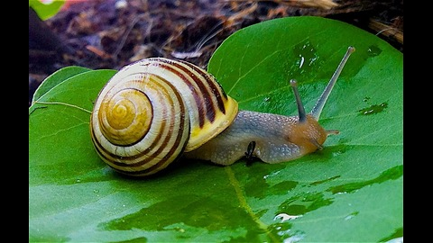
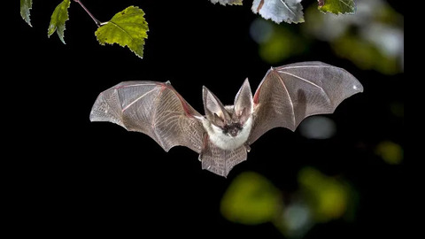
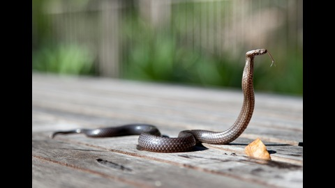
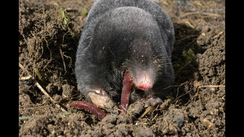

Bem vindos à minha página!
Olá, meu nome é João Pedro Silva de Lima, tenho 20 anos e eu sou programador na área de T.I! Resolvi fazer essa página para demonstrar certos conhecimentos que adiquiri ao passar dos anos quando o assunto se trata de criar e montar páginas web! Como a página é pessoal, decidi fazer ela toda sobre algo que eu amo: animais! Peguei quatro animais específicos, e montei uma página específica para cada um deles, com o intuito de ensinar mais sobre o quão fascinante a natureza de cada ser vivo é! Espero que gostem :)Caracóis
Caracóis, aqui tem caracóis de todos os tipos, cores e conchas! Nesse artigo você vai estar por dentro de tudo sobre os nossos colegas gastrópodes! Eles estão em todo o lugar, seja em terra firme quanto no fundo do oceano! Você simplesmente não consegue escapar dos detalhes que tornam eles interessantes!
Morcegos
É um pássaro? É um avião? Não, é um morcego! Habitando os cantos mais escuros da noite, os únicos mamíferos voadores do planeta são carinhas extremamente caristmáticos! Se você concorda, você vai adorar essa página!
Serpentes
Lagartos sem membros, mas com muitas qualidades interessantes para se amar...pelo menos de longe! Animais sorrateiros e agilidosos, serpentes são um grupo de animais que simplesmente não conseguem fugir de nossas atenções!
Toupeiras
Já que falamos de mamíferos do céu, por que não falar também dos reis do subsolo: as toupeiras! Pra que enxergar direito a luz do Sol quando a sua vida se passa por de baixo da terra? Pegue uma pá, e prepare para desenterrar diversas curiosidades sobre esse animal fascinante!